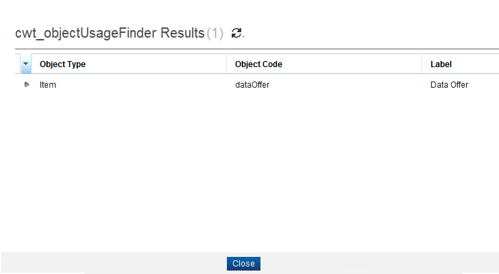

Item - Show Usage
To view the usage of an item, follow these steps:
- From the Overview page, click Commercial Modeling > Items in the Quick start section.
- The Item page appears; click the Search button to search the items.
- Select one item (for example, Phone Offer) from the list, and then click the Show Usage button.
- The Usage Finder displays which Items are associated with the selected item.

- The Usage Finder displays which Items or objects are associated with the selected item.
|